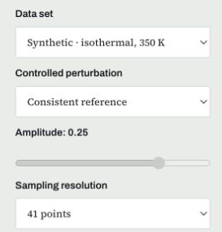
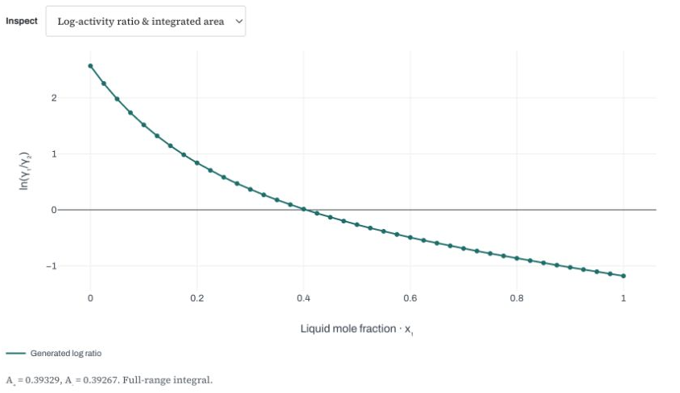
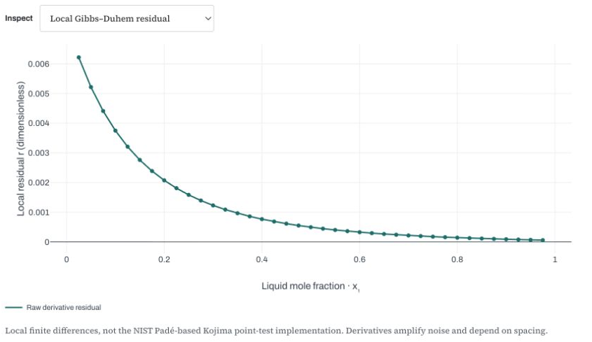
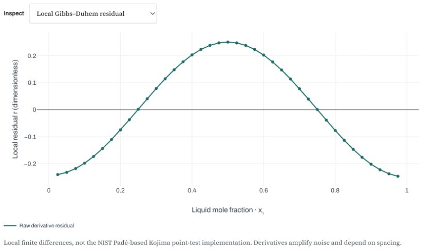
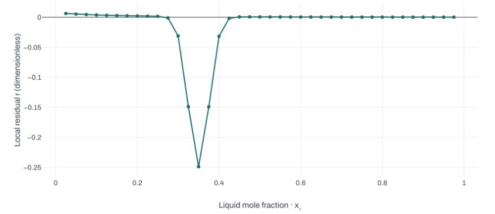
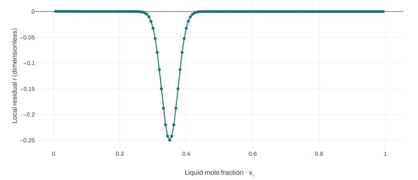
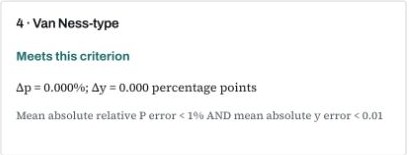

Thermodynamic consistency and liquid stability
Session 3: Holiday independent study · about 3 hours
Your independent lesson
Your action: Open the worksheet and Lab guide. Keep them beside these slides. Complete the sections in order, checking solutions only after your attempt.
This lesson combines explanation, actual Lab 03 and Lab 04 demonstrations, your own calculations, and two Lab investigations.
- Practice worksheet, 6 pages: Sections A–I.
- Lab guide, 4 pages: exact controls and interpretation.
- Worked solutions: retain your first answer, then correct it.
Allow about 3 hours including the recording, independent work and a 10-minute break. Pause at the 10 work stops. Slide time ranges are a nominal study-time route, not recording timestamps or a fixed completion time.
The nominal 180-minute route
Your action: Start your study timer. Use this nominal route, allowing more time if needed. Have a calculator and paper ready.
| Study time | What you do | Worksheet |
|---|---|---|
| 0–15 | Review composition, activity and fitting | p. 1, A |
| 15–40 | Connect excess energy, Gibbs–Duhem and the data path | p. 1, B |
| 40–65 | Calculate an area and a local residual | p. 2, C |
| 65–95 | Watch, predict and investigate Lab 03 | p. 3, D–E |
| 95–105 | Take a break | |
| 105–155 | Distinguish stability and calculate LLE | pp. 4–5, F–G |
| 155–170 | Solve an unseen case before checking | p. 6, H |
| 170–180 | Submit the exit ticket and feedback; save work | p. 6, I |
Review attempt · 0–15 min
Your action: Pause here. Complete worksheet p. 1, A1–A3, with a calculator. Attempt all three before advancing.
A1. Define liquid composition x_1, vapor composition y_1, overall composition z_1, and activity coefficient \gamma_1.
A2. Calculate the activity coefficient from this synthetic Lab 08 observation:
\gamma_1=\frac{y_1P}{x_1P_1^{sat}} =\frac{0.704857144627(158.707198211)}{0.5(150)}
Pressures are in kPa. Assume ideal vapor and negligible Poynting correction.
A3. Does a small model fitting error prove thermodynamic consistency? Explain briefly.
Review check · 0–15 min
Your action: Check A1–A3. Keep your original answers and add corrections. Continue with worksheet B on the same page.
x_1 and y_1 describe compositions within a phase. z_1 describes the overall mixture. On the pure-liquid standard state, a_1=x_1\gamma_1.
\gamma_1=1.491545\qquad \ln\gamma_1\approx0.399813
Gamma is dimensionless. It tells us how liquid activity differs from the ideal-mixture value a_1=x_1.
Fitting: How well does this selected model reproduce these observations?
Consistency: Do inferred properties satisfy a thermodynamic constraint under the stated assumptions?
Excess Gibbs energy · 15–40 min
Your action: Read this definition. Use it to begin B1; the next two slides supply the reasoning.
Excess Gibbs energy measures the departure from ideal mixing at the same T, P and composition.
\bar g_i^E=RT\ln\gamma_i,\qquad \widetilde g^E\equiv\frac{g^E}{RT} =x\ln\gamma_1+(1-x)\ln\gamma_2
Here g^E is molar, \bar g_i^E is partial molar, and x=x_1.
The two activity coefficients are partial-molar information from one mixture Gibbs-energy function. They are constrained together; they are not two arbitrary curves.
Gibbs–Duhem · 15–40 min
Your action: Read the fixed-condition equation. In B1, identify the weights and explain what cannot vary independently.
For a binary liquid at fixed temperature and pressure:
x\,d\ln\gamma_1+(1-x)\,d\ln\gamma_2=0
If \ln\gamma_1 changes with composition, \ln\gamma_2 must change in a compatible way.
For an ideal mixture, both activity coefficients are 1 and both log values are zero. Nonideal mixtures may have large gamma values and still satisfy this relation.
Nonideality is not inconsistency. The issue is the relation between the composition dependences.
From excess energy to a slope · 15–40 min
Your action: Finish worksheet p. 1, B1. Use the product rule, then identify the part that Gibbs–Duhem removes.
Differentiate the definition at fixed T,P:
\frac{d\widetilde g^E}{dx} =\ln\gamma_1-\ln\gamma_2 +\underbrace{x\frac{d\ln\gamma_1}{dx} +(1-x)\frac{d\ln\gamma_2}{dx}}_{0\text{ by Gibbs–Duhem}}
Therefore,
\frac{d\widetilde g^E}{dx}=L(x),\qquad L(x)\equiv\ln\!\left(\frac{\gamma_1}{\gamma_2}\right)
The local diagnostic will compare a numerical slope of excess energy with the log-activity ratio at the same composition.
Follow the experimental path · 15–40 min
Your action: Complete worksheet p. 1, B2. Identify what changes in the data set before choosing a test.
With molar excess properties and varying T,P:
\sum_i x_i\,d\ln\gamma_i =-\frac{h^E}{RT^2}\,dT+\frac{v^E}{RT}\,dP
| Path | Consequence for the local test |
|---|---|
| Fixed T,P | Both correction terms vanish. |
| Isothermal VLE, varying P | Lab 03 neglects the excess-volume pressure term. |
| Isobaric VLE, varying T | The excess-enthalpy term is needed. |
Real isobaric data without independent h^E cannot receive this lab’s local consistency verdict. A synthetic generator can supply its own correction; that is not independent calorimetry.
Match the method to the claim · 15–40 min
Your action: Complete B3 using this comparison and Lab guide p. 1. No Lab calculation yet.
| Method | What it examines | Main qualification |
|---|---|---|
| Isothermal area | Full-range integral of L | Endpoint coverage and pressure-term approximation; errors can cancel. |
| Local differential | A slope relation across composition | Path corrections and numerical differentiation. |
| Herington | Empirical area allowance for an isobaric boiling range | Does not supply measured h^E. |
| Van Ness-type | Reproduction of P and y by a selected model | Depends on model flexibility and property assumptions. |
Not applicable, not assessed, not run, and outside this criterion mean different things. Record the reason with the result.
What a local residual measures · 15–40 min
Your action: Read the calculation sequence, then pause to complete B1–B3, worksheet p. 1, using Lab guide p. 1. Keep this sequence beside C4–C6 for the local exercise.
For fixed T,P, or the stated isothermal approximation:
r(x)=\frac{d\widetilde g^E}{dx}-L(x)
- Calculate \widetilde g^E=x\ln\gamma_1+(1-x)\ln\gamma_2 at each point.
- Estimate its slope from neighboring compositions.
- Subtract L=\ln\gamma_1-\ln\gamma_2 at the center point.
A residual is dimensionless. One residual is not an averaged score. Lab 03 reports 100\,\mathrm{mean}|r| over interior points, with a teaching threshold of 5.
The lab uses three-point finite differences, not the NIST/Kojima Padé-based point test.
Why the area should vanish · 40–65 min
Your action: Read the link from the local equation to a full-range integral. Then use the supplied values on the next slide.
At pure-liquid endpoints, \widetilde g^E(0)=\widetilde g^E(1)=0 under the chosen standard states.
\int_0^1 L(x)\,dx =\int_0^1\frac{d\widetilde g^E}{dx}\,dx =\widetilde g^E(1)-\widetilde g^E(0)=0
This is a global necessary check under fixed T,P, or the stated isothermal approximation.
A zero integral does not force every local residual to vanish. Positive and negative departures may cancel.
Area attempt · 40–65 min
Your action: Pause and complete worksheet p. 2, C1–C3. Calculate before advancing to the check.
Synthetic values with endpoint limits supplied analytically:
| x | 0 | 0.25 | 0.50 | 0.75 | 1.00 |
|---|---|---|---|---|---|
| L=\ln(\gamma_1/\gamma_2) | 2 | 1 | 0 | −1 | −2 |
S\approx\sum_j\frac{L_j+L_{j+1}}{2}(x_{j+1}-x_j)
Find all four signed areas and their sum. Repeat after adding 0.2 to every L value. Explain why a zero sum alone cannot certify measurements.
Area check · 40–65 min
Your action: Correct C1–C3. Distinguish a signed integral from the Lab’s normalized area score.
Baseline interval areas: 0.375,\ 0.125,\ -0.125,\ -0.375, so S=0.
After the shift: 0.425,\ 0.175,\ -0.075,\ -0.325, so S=0.2.
Lab 03 calls the signed integral I, and also reports:
D=100\frac{|A_+-A_-|}{A_++A_-}
A_- is the positive magnitude below zero. The isothermal teaching criterion is D<5\%. The normalization is undefined when both areas vanish.
Real interior measurements do not provide the missing endpoint limits. Extrapolation remains an assumption.
Worked local table · 40–65 min
Your action: Follow this worked example in C4 and Lab guide p. 1. Calculate excess energy before estimating its slope.
These are synthetic values at fixed T,P, not experimental VLE data.
| x | \ln\gamma_1 | \ln\gamma_2 | \widetilde g^E |
|---|---|---|---|
| 0.40 | 0.72 | 0.32 | 0.480 |
| 0.50 | 0.50 | 0.50 | 0.500 |
| 0.60 | 0.32 | 0.72 | 0.480 |
For equally spaced points, the center slope is:
\left.\frac{d\widetilde g^E}{dx}\right|_{0.50} \approx\frac{0.480-0.480}{0.60-0.40}=0, \qquad r(0.50)=0-(0.50-0.50)=0
Change one value · 40–65 min
Your action: Finish C4. Change only \ln\gamma_1 at x=0.60 from 0.32 to 0.36. Recalculate the affected excess energy.
\widetilde g^E(0.60)=0.60(0.36)+0.40(0.72)=0.504
The center log ratio is unchanged: L(0.50)=0.
r(0.50)\approx\frac{0.504-0.480}{0.60-0.40}-0 =\boxed{0.120}
The changed neighboring value alters the estimated slope. A local check detects a departure even though it does not directly differentiate at the changed endpoint.
With real measurements, a departure could reflect error, numerical sensitivity or an omitted path correction. It does not identify the cause by itself.
Local attempt · 40–65 min
Your action: Pause and complete C5–C6, worksheet p. 2. Use the same three-step procedure; do not open the check yet.
Independent synthetic fixed-T,P table:
| x | \ln\gamma_1 | \ln\gamma_2 |
|---|---|---|
| 0.30 | 0.735 | 0.135 |
| 0.40 | 0.540 | 0.240 |
| 0.50 | 0.375 | 0.375 |
Calculate all three \widetilde g^E values and r(0.40).
Then change only the final \ln\gamma_2 from 0.375 to 0.425 and repeat. State one reason a measured nonzero residual needs further investigation.
Local check · 40–65 min
Your action: Correct C5–C6 and retain the working. Next, open Lab guide pp. 2–3 for the Lab 03 demonstration.
Clean \widetilde g^E values are 0.315,\ 0.360,\ 0.375.
r(0.40)\approx\frac{0.375-0.315}{0.50-0.30}-(0.540-0.240)=0
After the change, \widetilde g^E(0.50)=0.400:
r(0.40)\approx\frac{0.400-0.315}{0.50-0.30}-0.300 =\boxed{0.125}
Finite differences depend on spacing, rounding and noise. The central formula above assumes equal spacing; Lab 03 uses a three-point formula that also handles unequal spacing.
One center-point result is not the Lab’s average over a full data set.
Lab 03: watch the complete route · 65–95 min
Your action: Open Lab 03, worksheet p. 3 and Lab guide pp. 2–3. Watch the demonstration first; then reproduce the investigation at the main work stop.
- Set a clean isothermal baseline and inspect area and local evidence.
- Predict, then apply canceling and localized perturbations.
- Compare the localized case at 41 and 161 points.
- Return to the clean baseline, run one modeling test, and save evidence.
These are generated P–T–x–y data at 350 K with known endpoint activities. They are distinct from the Lab 08 example and the article data.
Follow the controls on screen, not only the result badges.
Demonstration: baseline controls · 65–95 min
Your action: Locate these controls in the demonstration. Record D1 settings; reproduce them during the work stop.

| Control | Exact setting |
|---|---|
| Data set | Synthetic · isothermal, 350 K |
| Controlled perturbation | Consistent reference |
| Sampling resolution | 41 points |
| Inspect | Log-activity ratio & integrated area |
Controls update automatically. The clean reference disables Amplitude. A new Lab may start at 81 points: explicitly choose 41.
Demonstration: two baseline views · 65–95 min
Your action: Watch the switch to Local Gibbs–Duhem residual. Note where D1’s area and local evidence appear.
Area view

Local view

I\approx0.00061849; D\approx0.07869\%; local mean score \approx0.11776. Both criteria are met.
A consistent generator does not make a finite-grid residual exactly zero. Read the axis scale, not only the curve’s apparent height.
Predict the defects before seeing them · 65–95 min
Your action: Write the predictions in D2–D3 before the demonstration reveals the changed plots. Pause briefly if needed.
For Canceling errors · zero net area, predict whether these must agree:
- A small full-range area score.
- A small local residual everywhere.
For Localized defect near x₁ = 0.35, predict whether a narrow peak could be hidden by an average.
Use the distinction between an integral, an average and a plotted local value. Do not write a verdict before inspecting the evidence.
Why the area misses the canceling error · 65–95 min
Your action: Watch Canceling errors · zero net area, amplitude 0.25, 41 points. Compare both plots with your D2 prediction.

The generator adds (1-x)f to \ln\gamma_1 and -xf to \ln\gamma_2.
f(x)=0.25\cos(2\pi x)
\widetilde g^E is unchanged, while L increases by f.
\int_0^1 f(x)\,dx=0
D\approx0.07355\% meets its criterion; the local mean score \approx15.59870 is outside its criterion. The added area cancels, while local departures remain.
A localized defect and sampling · 65–95 min
Your action: Watch the localized defect, amplitude 0.25, at 41 and 161 points for D3–D4. The sampling comparison is required.
41 points

161 points

| Points | Area D | Local mean score | Largest |r| |
|---|---|---|---|
| 41 | 2.01346% | 1.67184 | 0.24903 |
| 161 | 1.94172% | 1.56561 | 0.24994 |
Both averages meet their thresholds. More sampling resolves the peak; it does not remove the imposed defect.
Modeling and saved evidence · 65–95 min
Your action: Watch Consistent reference, 41 points → Run modeling test once. Record D5, then watch export and restore.

The fit uses two constant NRTL parameters at 350 K, with \alpha=0.47. Criteria: \Delta p<1\%, \Delta y<1 percentage point. Herington is Not applicable for this isothermal path.
Export all results: inspect the JSON settings, scores, fit and reflection. A near-zero fit reproduces its own generator; it does not validate real measurements.
Reopen: expand Study workspace · reopen and compare cases → load the JSON → Restore the case → Run modeling test. Restoring inputs is not a fresh fit.
Your Lab 03 investigation · 65–95 min
Your action: Pause the recording. Complete worksheet p. 3, D1–D5 and E1–E2, using Lab guide pp. 2–3. Keep the predictions you wrote before the demonstration.
- Reproduce clean, canceling and localized cases at 41 points; amplitude 0.25 for the two defects.
- Repeat the localized case at 161 points. Record settings, scores and the visible peak.
- Return to clean 41 points, run the modeling test once, and record its units and applicability.
- Save exports or screenshots. Annotate one residual plot (E1).
For E2, write one claim, numerical evidence, and one limitation. Explain why a badge alone cannot establish all forms of consistency.
Advance only after you have your own saved record.
Lab 03 check: retain the distinction · 65–95 min
Your action: Compare D–E with the worked solutions. Add corrections without replacing your first predictions or results.
| Case | What the evidence supports |
|---|---|
| Clean baseline | Both checks approach their expected behavior within numerical error. |
| Canceling error | A near-zero area can coexist with a large local departure. |
| Localized defect | An average can hide a narrow peak even at 161 points. |
| Clean model fit | The selected model reproduces its own generated data. |
An acceptable conclusion names the data path, settings, score, plotted evidence and limitation.
For real isobaric data, Herington’s empirical allowance does not replace missing independent h^E in the local test. Do not turn “not assessed” into “failed.”
Break · 95–105 min
Your action: Take a 10-minute break. Leave your files open. Return to worksheet p. 4, Section F, at study minute 105.
Next question: a model can satisfy Gibbs–Duhem and still predict liquid separation.
We will ask which admissible state has the lowest total Gibbs energy, then calculate how much of each liquid is present.
Consistency does not imply one stable liquid · 105–155 min
Your action: Read the new question and begin worksheet p. 4, F1. Keep consistency and stability as separate claims.
At fixed T,P, stable equilibrium minimizes total Gibbs energy subject to the material balance.
\widetilde g(x)=\frac{\Delta g_{mix}}{RT} =x\ln x+(1-x)\ln(1-x)+\widetilde g^E(x)
A homogeneous liquid and a split into two liquids are competing admissible states.
A consistent excess-Gibbs model may give a nonconvex mixing-energy curve. It can therefore predict two liquids without violating Gibbs–Duhem.
What local curvature tells us · 105–155 min
Your action: Use these definitions for F1 and your later G1 predictions. The labels describe a hypothetical homogeneous feed.
| Homogeneous feed | Local behavior | Global question |
|---|---|---|
| Stable | Locally resistant to small fluctuations | It lies on the lower convex envelope. |
| Metastable | Positive curvature resists small fluctuations | A finite split still has lower Gibbs energy. |
| Unstable | Negative curvature permits small fluctuations to lower energy | The homogeneous liquid is not the minimum. |
For one-parameter Margules,
\widetilde g^E=A x(1-x),\qquad \widetilde g''(x)=\frac{1}{x(1-x)}-2A
Positive curvature alone cannot prove global stability. This bulk model does not calculate nucleation barriers or separation rates.
A common tangent must support the curve · 105–155 min
Your action: Complete F3 after reading this condition. Separate a stationary solution from a globally supported split.
For two distinct candidate liquid compositions:
\widetilde g'(x^\alpha)=\widetilde g'(x^\beta) =\frac{\widetilde g(x^\beta)-\widetilde g(x^\alpha)}{x^\beta-x^\alpha}
The common tangent must lie at or below the Gibbs curve throughout the admitted composition interval.
Equality of chemical potentials provides a candidate. Global support checks whether any other admissible composition offers lower energy.
A root with x^\alpha=x^\beta does not establish two distinct liquids. Amounts must also satisfy the feed balance.
Lever-rule attempt · 105–155 min
Your action: Pause. Complete F2, worksheet p. 4, using the supplied illustrative endpoints and a calculator. Attempt both feeds before advancing.
Suppose a globally supported tie line has x_1^\alpha=0.20 and x_1^\beta=0.80.
f_\beta=\frac{z_1-x_1^\alpha}{x_1^\beta-x_1^\alpha},\qquad f_\alpha=1-f_\beta
Find both liquid fractions at z_1=0.50, then z_1=0.35. Check:
z_1=f_\alpha x_1^\alpha+f_\beta x_1^\beta
Here \beta means the component-1-rich liquid. These are hand-example endpoints, not the expected Lab 04 values.
Lever-rule check · 105–155 min
Your action: Correct F2. Keep the hand example separate from the model investigation that follows.
| Overall composition z_1 | f_\alpha | f_\beta |
|---|---|---|
| 0.50 | 0.50 | 0.50 |
| 0.35 | 0.75 | 0.25 |
0.75(0.20)+0.25(0.80)=0.35
Inside the same tie line at unchanged conditions, changing the feed changes the phase amounts. The coexisting phase compositions remain fixed.
Do not extrapolate this lever rule to a feed outside the tie-line interval; a negative fraction is not a physical split.
Predict three feeds before running · 105–155 min
Your action: Pause for 3 minutes. Write G1 predictions on worksheet p. 4 before watching the Lab 04 demonstration on the next slide. Keep A=3 for all feeds.
Compare z_1=0.02,\ 0.12,\ 0.50.
For each feed, predict:
- The homogeneous-feed label: stable, metastable or unstable.
- The equilibrium: one liquid or two liquids.
- Whether positive curvature alone is enough evidence.
Use \widetilde g''(z)=1/[z(1-z)]-6 for a local clue. You still need global evidence to distinguish stable from metastable.
The named presets contain the answers in their labels, so make your predictions first.
Lab 04: setup, compare and reopen · 105–155 min
Your action: Watch the complete Lab 04 demonstration. Keep Lab guide p. 4 and worksheet p. 5, G2–G4, open. Rerun it yourself at the next work stop.
- Set Liquid model: Margules · 1 parameter and Interaction parameter A: 3.
- Type Feed mole fraction z₁ = 0.02, then Find equilibrium. Repeat for 0.12 and 0.50.
- Compare the feed label, equilibrium phases, phase compositions and amounts. Inspect Gibbs energy & common tangent and Verify the equilibrium for energy and balance checks.
- Use Export study JSON for each of the three cases, with distinct filenames.
- Expand Study workspace · reopen and compare cases. Load the saved JSON files, Restore a case, then Find equilibrium for a fresh calculation.
This hypothetical fixed-T,P model assigns no physical temperature. Keep its parameters unchanged. Restored records are evidence; recalculation checks the reopened inputs.
Your Lab 04 investigation · 105–155 min
Your action: Pause for 25 minutes. Rerun G2–G4 independently using worksheet p. 5 and Lab guide p. 4. Keep your G1 predictions and your own calculations. Save each case with Export study JSON or a labeled screenshot.
G2: Record all three feeds. Keep the homogeneous-feed label separate from the final equilibrium phase count.
G3: For each two-liquid case, use the lab’s endpoints to calculate f_\beta independently, then reconstruct z_1.
G4: Calculate the homogeneous and split Gibbs energies at z_1=0.12. Compare their difference with the Lab. Inspect curvature, global tangent support and chemical-potential equality.
For z_1=0.02, report the single liquid at the feed composition. Do not force a two-liquid lever rule or invent a second phase.
Three-feed check · 105–155 min
Your action: Compare G1–G2 with this model result. Explain any change from your predictions before reading the balance check.
At A=3, the coexistence endpoints are approximately 0.07072018 and 0.92927982.
| Feed z_1 | \widetilde g''(z_1) | Homogeneous feed | Stable equilibrium |
|---|---|---|---|
| 0.02 | +45.0204 | Stable | One liquid at x_1=0.02 |
| 0.12 | +3.4697 | Metastable | Two liquids at the coexistence endpoints |
| 0.50 | −2.0000 | Unstable | Two liquids at the same endpoints |
The metastable case has positive curvature and a lower-energy split. That is why a local criterion cannot replace the global test.
Check amounts and the energy benefit · 105–155 min
Your action: Check G3–G4 against your calculation and Lab results. Save your corrected comparison before the unseen review.
For z_1=0.12:
f_\beta=\frac{0.12-0.07072018}{0.92927982-0.07072018} \approx0.05739825,\qquad f_\alpha\approx0.94260175
| Feed | f_\beta | (g_{hom}-g_{eq})/(RT) |
|---|---|---|
| 0.02 | Not a two-phase fraction | 0 |
| 0.12 | 0.05739825 | 0.00821636 |
| 0.50 | 0.50000000 | 0.11519417 |
At z_1=0.12: \widetilde g_{hom}=-0.05012499, \widetilde g_{split}=-0.05834135. Subtraction gives the positive decrease above. A balance checks amounts; global support checks stability. Neither predicts the separation rate.
Unseen review: consistency · 155–170 min
Your action: Read H1–H2 on worksheet p. 6, then read H3–H4 on the next slide. Attempt all four together at the main review stop before any check.
H1. For an independent fixed-T,P table:
| x | 0.20 | 0.30 | 0.40 |
|---|---|---|---|
| \widetilde g^E | 0.32 | 0.42 | 0.48 |
Given L(0.30)=0.75, calculate the center slope and local residual. Is that one residual the Lab’s full-data mean score?
H2. Real isobaric VLE data have no independent h^E. A raw local score is 8.4. Can this be called a failed local consistency test? Explain.
Unseen review: equilibrium and evidence · 155–170 min
Your action: Pause and finish H1–H4 without the solutions. Use a calculator and the definitions you have learned, then advance to the checks.
H3. A candidate pair has x^\alpha=0.15, x^\beta=0.75, and feed z_1=0.39. Calculate both liquid fractions and check the balance. What further evidence is needed for stability?
H4. A hypothetical full-range isothermal data set gives:
| Area D | Local mean score | Model \Delta p | Model \Delta y |
|---|---|---|---|
| 1.2% | 8.4 | 0.3% | 0.2 percentage point |
Use the stated teaching thresholds. Which criteria are met? Write a defensible conclusion that preserves their different meanings.
Unseen check: consistency · 155–170 min
Your action: Correct H1, H2 and H4 in a different color or add a correction note. Keep your first answers.
H1: Center slope =(0.48-0.32)/0.20=0.80; hence r=0.80-0.75=\boxed{0.05}. It is one residual, not a full-data average.
H2: Not assessed for this local verdict. The missing excess-enthalpy correction prevents treating the raw isobaric score as a valid fixed-condition test.
H4: Area and model-reproduction criteria are met; the local criterion is outside its threshold. A small area and a good selected-model fit do not remove the local departure.
Investigate the path assumptions, numerical sensitivity and property/data inputs before attributing a cause.
Unseen check: equilibrium · 155–170 min
Your action: Correct H3, then turn to worksheet p. 6, Section I. Use the separate worked solutions for any unfinished explanation.
f_\beta=\frac{0.39-0.15}{0.75-0.15}=0.40, \qquad f_\alpha=0.60
0.60(0.15)+0.40(0.75)=0.39
The fractions satisfy the material balance, but a balance alone does not establish equilibrium.
For a stable split, the distinct phases must have equal component chemical potentials and a globally supporting common tangent. Check the candidate against the full admitted Gibbs curve.
Exit ticket · 170–180 min
Your action: Pause and complete worksheet p. 6, I, in the existing Session 3 form: reflection, then feedback. Include your actual study minutes and pace. Submit once and wait for “Response received.”
In the concept answer, explain when a calculated liquid split is stable. Distinguish a metastable homogeneous feed from its equilibrium state.
In the evidence answer, include the Lab 03 area/local comparison, settings and numerical results. Mention the required 41 versus 161 comparison and one limitation.
The form is anonymous and does not identify individual attendance.

Feedback and saved work · 170–180 min
Your action: Verify “Response received” and check your saved files. If you have not submitted yet, finish the same form once. Do not resubmit after receiving confirmation.
Before submission, include your actual study minutes and whether the pace worked. Report whether the worked calculation and Lab demonstration helped, and identify one remaining difficulty. If already submitted, keep the existing response.
Keep:
- The completed worksheet, original predictions and corrections.
- Lab 03 exports or screenshots, including the required sampling comparison and annotated residual plot.
- All three Lab 04 cases, with independent balances for the two-liquid cases.
All required work fits within this lesson. LLE fitting and VLLE are optional extensions.